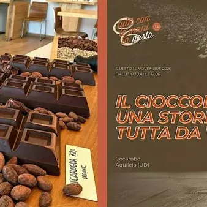

sab 14 nov · dalle 10:30
Tutti con le mani in pasta - Il cioccolato, una storia tutta da vivere
Ogni anno, a novembre, Tutti con le mani in pasta invita i consumatori a entrare nei laboratori dei soci di Etica del Gusto per vivere da vicino l’arte della panificazione, della pasticceria, della gelateria e della cioccolateria artigianale. La pasticceria cioccolateria Mosaico…
 Indicazioni
Indicazioni
- Costi e prenotazioni
- Costo non indicato · Prenotazione non indicata
- Programma
- Programma da verificare. Apri la fonte ufficiale per orari e possibili aggiornamenti.
- In caso di maltempo
- Nessuna indicazione specifica pubblicata.
- Note
- Acquisito automaticamente dalla fonte.
L’EVENTO
Descrizione completa
Ogni anno, a novembre, Tutti con le mani in pasta invita i consumatori a entrare nei laboratori dei soci di Etica del Gusto per vivere da vicino l’arte della panificazione, della pasticceria, della gelateria e della cioccolateria artigianale.
La pasticceria cioccolateria Mosaico Cocambo propone:
"IL CIOCCOLATO, UNA STORIA TUTTA DA VIVERE"
Volete sentirvi un po’ come nella fabbrica di cioccolato di Willy Wonka? Allora lasciatevi guidare in un viaggio dove il cacao prende vita, si trasforma e diventa pura emozione.
Alla guida, il maestro Piero Zerbin e la sua squadra, che apriranno le porte della loro fabbrica di cioccolato, facendovi scoprire il frutto del cacao fino alla sua trasformazione, tra profumi, consistenze, sapori e tanta passione.
Un’occasione dolce, speciale e conviviale da vivere insieme ad altri amanti del gusto, proprio alle porte delle festività natalizie. Un viaggio per imparare, assaggiare e lasciarsi sorprendere, scoprendo segreti ed emozioni che, dopo tanti anni, continuano ad alimentare la loro passione per questo meraviglioso lavoro.
Ma… non finisce qua!
La squadra di Cocambo non trasforma la fava soltanto in tavolette o praline. Hanno voluto spingersi oltre, realizzando prodotti anche salati a base di cacao, concludendo con un’altra dimensione: quella liquida.
Ottenendo un liquore al cioccolato, una creazione artigianale tutta da scoprire e gustare.
Al termine della visita, verrete accompagnati all’interno del loro locale, per passare un momento conviviale a gustare prodotti dolci e salati a base di cioccolato.
CLICCA QUI PER ISCRIVERTI
Scopri gli altri appuntamenti sulla pagina: www.eticadelgusto.it/tutti-con-le-mani-in-pasta
IL PROGRAMMA
Programma e orari
Appuntamenti raccolti dalle fonti elencate. Dove manca un orario, non è ancora disponibile in questa scheda.
Programma pubblicato
- Dal 2026-11-14 al 2026-11-14
INFORMAZIONI UTILI
Prima di partire
- Controllare la fonte prima di partire.
ORGANIZZAZIONE